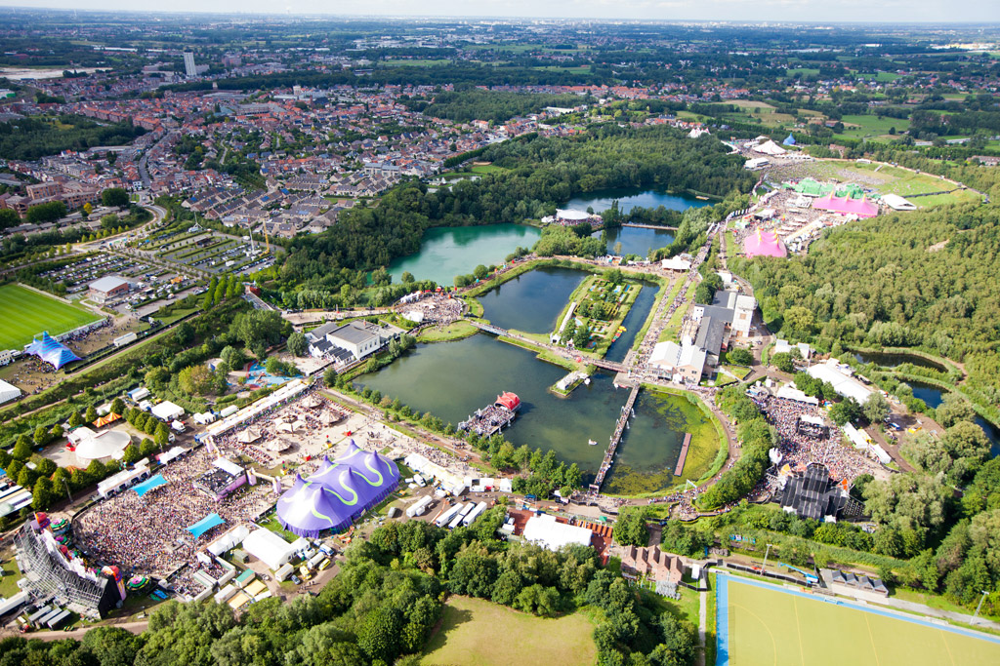
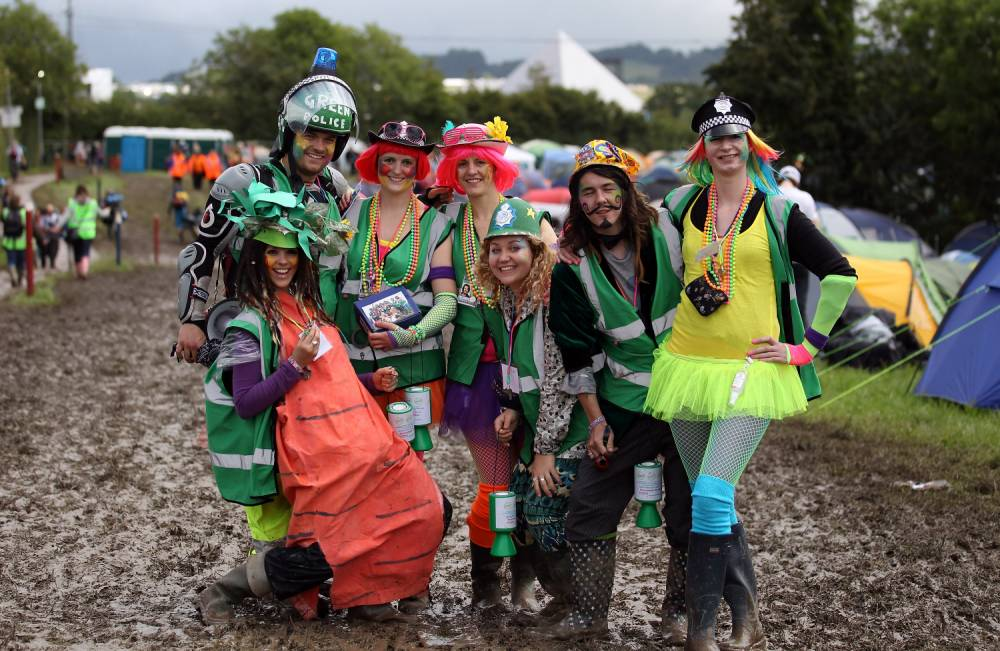

1. Carnival di Venezia
Italy, 11th to 28th February
The Carnival of Venice is one of the biggest festivals in Europe that originated sometime in the year 1162 AD. This Festival is held in Venice every year between January and February and ends 40 days before Easter with celebration of Lent. This festival was made official during the renaissance period, however was banned by the King of Austria and masks were forbidden. After Napoleon invaded Italy in 1797, the carnival completely stopped for almost two centuries and was recently revived to boost tourism. In Italy, the festivities usually begin from the weekend before the actual carnival date which is Shrove Tuesday. The official opening of the carnival happens at St. Mark’s Square and it is quite a sight, after which a serious of events like the costume contests, musical performances, theatrical performances and balls continue for a week. At the Carnival, socialites disguise themselves in elaborate masks and costumes, usually from the 18th century and rejoice to their heart’s content. Back then the masks allowed citizens to adopt their alter egos without any fear of the social consequence or judgments based on their roles in the society. The Carnival of Venice is also known as Mardi Gras and is now celebrated world-over. During the carnival, exquisite Venetian palaces are a host to several Elite Parties that come with a high price tag. Delicious traditional sweets - Frittelle & Galani, can be purchased from any bakery in town, but only during the carnival. .
- see more
2. La Tomatina
Spain, 30th August

What once started out in 1945 as a brawl to get some attention (as per poplar story) at the Los G Igantes Carnival in Bunol has now become one of the most famous festivals in Europe. After a series on bans and un-bans, the wacky tradition was finally embraced by Spanish authorities in 1957, but only after setting a few rules. At this madcap tomato-throwing event that takes place on the last Wednesday of August each year, participants launch tomato attacks on fellow participants which eventually turns into a full-fledged Food (in this case tomato) war. The chaotic tomato fight takes place between 11 am 1 pm on that day. By the time the event ends, the participants are drenched in squished tomatoes skins, seeds, juice and street salsa, clothes utterly destroyed.This event has garnered a lot of attention in the recent years and sees truckloads of tourists visiting the event. Today, the organizers actually cultivate inedible tomatoes especially for this event. Also, to ensure that the festival is happy, hurt-free event for everyone, certain rules have been laid down by authorities - tomatoes have to be squashed before throwing, No other projectiles are allowed other than tomatoes , participants have to give way to the trucks and Lorries carrying tomatoes, etc.
- see more
3. Tomorrowland
Belgium, 21st July to 23rd July
Tomorrowland is one of the biggest European Music Festivals that takes place in Boom, Belgium that is only 32 Kilometers to the north of Brussels. The first edition of Tomorrowland was held in 2005 which was organized by ID&T, a Dutch entertainment company. There are several other similar music festivals but Tomorrowland distinctly stands out from the rest owing to the Fairytale stage designs that change into castles, cobras, bookcases. The lights and lasers animate the venue in the evenings. Another interesting and infamous aspect of Tomorrowland is the Church of Love, a temple dedicated to love that is guarded by naughty nuns. Couples can cuddle inside the reportedly cozy church for 15 minutes before rejoining the party outside. However, since Tomorrowland is a music festival, it has much more than just visual delights. The top notch music systems literally make your heart beat harder than ever. Your feet start tapping involuntarily to the superlative beats dished out by some of the best performers, DJs and musicians. Most people attending Tomorrowland choose camping as their accommodation. .
Tips: Get year around hotel deal with TripHobo Hotels. Book Now, Pay Later!.
- see more
4. Oktoberfest
Germany, 16th September to 3rd October
This festival is one of the most famous events in Europe. ‘Oktoberfest’ is synonymous with dousing oneself in beer, after all it is the beloved beverage in Germany. The Oktoberfest takes place in Munich on the well-known open space by the name of uo;Theresienwiese’. The big tents are erected especially for the festival and it takes about three months to be completed. The Oktoberfest begins in September and ends on the first Sunday of October or on October 3rd whichever comes later. Minimum duration of the festival is 16 days. During this festival, visitors can enjoy different beers along with live orchestras and many fun rides such as the Frisbee Carousel, roller coasters, etc. More than 6 million people from around the world attend the festival. .
Tips: Not to be missed: Beer, rides and traditional food..
- see more
5. Glastonbury
England,21st June to 25th June
One of the most famous festivals in Europe, the Glastonbury fiesta paves way for a five-day fun ride full of music entertainment and fun. The festival is organised amidst the greenish landscapes of Somerset county in London. The oldest in the arena, the Glastonbury festival is also known to be the largest among all making it a huge affair to visit and explore. While it might be little inconvenient for people to get to this place, given this little utopia of fun is literally secured amidst nowhere, not to mention the miles long walk you need to go through to conquer the journey to this little village of Pilton, the ultimate results will stun you more than you can imagine. The festival first laid its foundation in 1970, the day after Jimi Hendrix’s demise. The two-day celebration which then named as ‘Pilton Festival’ went so popular that it had garnered huge attention from all around the city propelling its further occurrence that has been religiously followed till date.The place has hosted some of the greatest artists of their time inspiring and entertaining others through their performances. Spread over an area of 2000 acres, the festival is celebrated in the midst of a large number of tented homes accommodating over 100 stages with numerous artists showcasing their artistic talent in front of the world. The performances that occur here includes theatres, circus, dancing, poetry and children's shows. The festival is deemed to be a classy mix of hippie and counterculture providing it with its diverse and colourful vibes. The place is home to myriad activities which must be experienced at least once in your lifetime. The view from the stone circle at sunrise is surely a breather. Have a drink in the Avalon Hill Pub or go for a tea in the Pyramid Stage, see the panoramic view of the surrounding from the Ribbon Tower or go for a Solar Powered movie for fun. If nothing else, the late show in the Shangri-La will whisk you away for a while. Memorable moments and loads of amusement, yes that is what Glastonbury festival is all about.
Tips: The Cardboard Towers near the Circus area and Going Gaga with a Cover Band. Getting crazy on the Floor and of course, the Sand Sculptures and the Protest Wall.
- see more